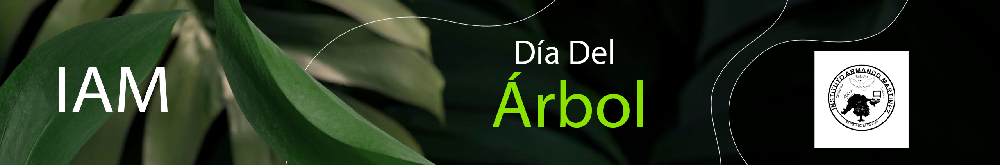
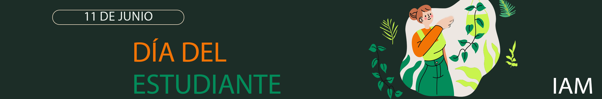
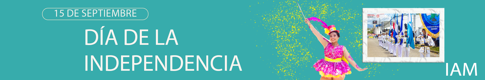

30 DE MAYO
Esta celebración nos recuerda lo vitales que son los árboles para la existencia de otras especies en la Tierra.
Como las plantas más grandes del planeta, nos dan oxígeno, estabilizan el suelo y sustentan vida silvestre del mundo. Proporcionan a los humanos materiales para herramientas, artesanías y construcción.

La importancia de esta celebración radica en reconocer el papel fundamental que desempeñan los estudiantes en la sociedad. No solo representan el futuro, sino que también son agentes de cambio capaces de influir en las dinámicas sociales y políticas.
Durante esta ceremonia, se destacaron los valores cívicos y el amor a Honduras que simboliza la Antorcha de la Paz. Los discursos resaltaron la importancia de la independencia de Honduras y de toda Centroamérica como un logro histórico que marcó el inicio de un camino hacia la libertad y la autodeterminación.

Se denomina Independencia de Centroamérica la conmemoración —de los países de Guatemala, Honduras, El Salvador, Nicaragua y Costa Rica— de la firma del Acta de Independencia de América Central el 15 de setiembre de 1821.